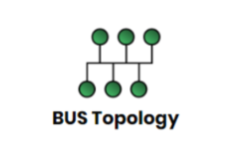

Bus Topology

Description:
- Main wire with many connecting wires.
- Each connecting wire has a terminator at the end.
- The terminator then connects to the device.
Advantages:
- Inexpensive to set up.
- If one device fails, the rest will not.
Disdvantages:
- Signal collisions can occur if too many devices are connected.
- If the main bus cable fails, the whole network fails.
- Security concerns.
Star Topology
Description:
- All devices are connected to a single switch to create one network.
Advantages:
- Hard to overload.
- If there is a fault in one of the devices, it is easy to identify.
- Devices are secure because there is no transmission mediums shared between all the devices.
Disdvantages:
- Additional hardware required - the hardware that is capable of marshalling the signals around the network.
- If the switch fails the whole network fails.